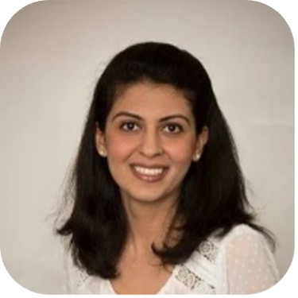
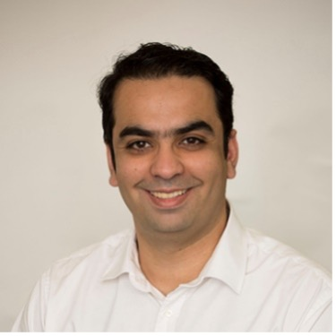
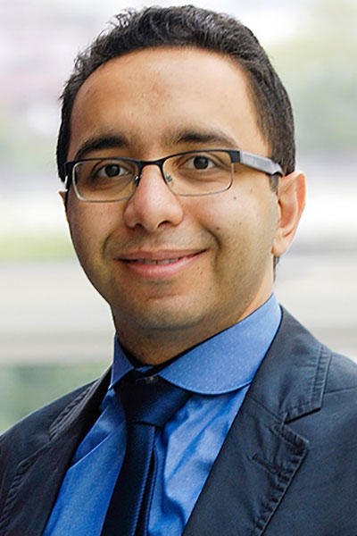
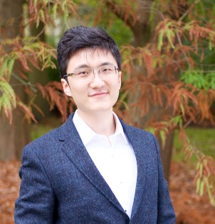
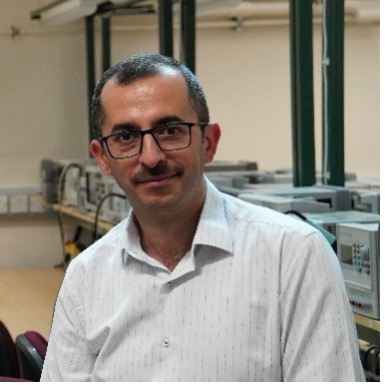
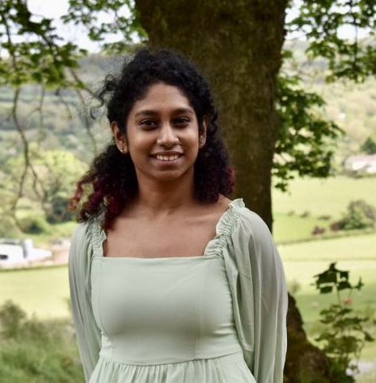

Meet ORAN-TWIN & ORAN-TWIN-X team
ORAN-TWIN & ORAN-TWIN-X bring together four different universities, Surrey, York, BCU and Leeds along with major industry partners Toshiba Research Labs (TRL), Analog Devices (AD), Samsung UK (SM) and Virgin Media-O2 (VMO2) together to tackle the challenge by building an explainable network digital twin (NDT) for ORAN.
Project Leads
Dr. Mohammad Shojafar
Project Leader @University of Surrey
Dr Mohammad secured around £1.2M as PI in various EU/UK projects, including 5G Mode (funded by DSIT/UK;2023), TRACE-V2X (funded by EU/MSCA-SE;2023), AUTOTRUST (funded by ESA/EU;2021), PRISENODE (funded by EU/MSCA-IF:2019), and SDN-Sec (funded by Italian Government:2018). He was also COI of various UK/EU projects like HiPER-RAN (funded by DSIT/UK;2023), APTd5G project (funded by EPSRC/UKI-FNI:2022), ESKMARALD (funded by UK/NCSC;2022), GAUChO, S2C and SAMMClouds (funded by Italian Government;2016-2018).
He received a Ph.D. from the Sapienza University of Rome, Rome, Italy, in 2016 with an "Excellent" degree. He received the honored BSc in CS at Iran University of Science and Technology, Tehran, Iran, in 2006. He was a programmer/software analyzer at the National Iranian Oil Company (NIOC) and Tidewater Ltd in Iran from 2008 to 2013. He published over 180 refereed top-tier articles in prestigious venues such as IEEE TII, IEEE TCC, IEEE TNSM, IEEE T-ITS, IEEE Network, Computer Networks, and FGCS. He is an Associate Editor in IEEE Transactions on Network and Service Management, IEEE Transactions on Intelligent Transportation Systems, IEEE Consumer Electronics Magazine, and Computer Networks Journals. He published three books on Cybersecurity Applications and Network Security, which appeared in Springer recently.

Dr. Maryam Hafeez
Project Leader @University of Leeds

Dr. Syed Ali Zaidi
Project Co-Leader @University of Leeds

Dr. Hamed Ahmadi
Project Leader @University of York

Dr. De Mi
Project Leader @Birmingham City University
Researcher Team
Zhizhou He
Research Fellow @University of Surrey
Bio: Zhizhou He received the PhD degree from the University of Surrey in 2024. He is currently a research fellow of ORAN TWIN project at the University of Surrey. His research is focusing on the fields of ORAN, digital twin, and AI.
Mona Akbari Kohnehsari
Research Assistant @University of Surrey
Bio: Mona received her master's degree in 5G and Future Generation Systems from the University of Surrey in 2024. She is currently a research assistant in Network Security at ORAN TWIN, University of Surrey. Her research focuses on the application of AI techniques, Digital Twins, and ORAN.
Abdelaziz Salama
Research Fellow @University of Leeds
Bio: Abdelaziz Salama received his PhD from the University of Leeds in 2024. His research interests include distributed learning, autonomous systems, and sensing. He worked as a Research Fellow on a UKRI-funded project. He focused on designing an efficient communication system for robots operating in underground and sewer pipes, ensuring reliable connectivity between the robots and with above-ground control operations. He is currently a research fellow on the ORAN TWIN project at the University of Leeds, focusing on ORAN and digital twin technology and their applications in network optimisation, wireless communication systems, and edge computing.

Mohammed M. H. Qazzaz
Research Assistant @University of Leeds
Bio: Mohammed M. H. Qazzaz is an accomplished academic and researcher who earned his BSc and MSc in Electronics and Communication Engineering from Mosul University, Iraq, in 2010 and 2013, respectively. He is pursuing a PhD at the University of Leeds, UK, with a research focus on Wireless Communications, UAV Communications, Artificial Intelligence / Machine Learning, and Radio Access Networks (RANs). Prior to his doctoral studies, he served as an assistant lecturer at the Communication Engineering School, Ninevah University, Iraq, from January 2017 to January 2022, where he shared his knowledge and expertise. He also brings seven years of practical experience from the telecommunications industry, working with local and international vendors and operators in various roles.

Swarna B. Chetty
Research Fellow @University of York
Bio: Swarna B. Chetty received the B.E. degree in electronics and communication engineering from Sathyabama University, Chennai, India, in 2014, the M.S. degree in mobile communication systems from the University of Surrey, U.K., in 2016, and the Ph.D. degree from University College Dublin, Ireland, in 2023. Prior to her doctoral studies, she gained professional expertise as a Software Developer. She is currently a Research Associate with the University of York, actively contributing to the YO-RAN Project. Her research interests include network virtualization, resource allocations, microservices, machine learning (especially reinforcement and deep learning), open radio network access, 5G, and beyond communications.
Berna Bulut Cebecioglu
Senior Research Fellow @Birmingham City University
Bio: Dr. Berna Bulut Cebecioglu received the B.Sc. degree from Kocaeli University, Kocaeli, Turkey, and the M.Sc. and the Ph.D. degrees from the University of Bristol, Bristol, U.K. She was a Senior Research Associate of electrical and electronic engineering with the University of Bristol and a Senior Research Fellow with WMG, The University of Warwick, U.K. She is currently an Associate Professor in Turkey. She is also a Senior Research Fellow of future communication systems with Birmingham City University, U.K. Her research interests include B5G and 6G networks, AI/ML, cross-layer design and optimizations of wireless networks, multimedia multicasting and broadcasting, application layer forward error correction codes, propagation modeling, millimeter wave, and vehicular communications.
Ahmed Al-Tahmeesschi
Research Fellow @University of York
Bio: Dr. Ahmed Al-Tahmeesschi received the Ph.D. degree in electrical engineering and electronics from the University of Liverpool, U.K., in 2018. Then, he served as a Postdoctoral Researcher with the Tokyo University of Agriculture and Technology from 2019 to 2021, contributing to 5G-Enhance a Horizon 2020 Joint Project. From 2021 to 2023, he served as a Research Associate with the University of Helsinki and was a member of the Finnish Centre of Artificial Intelligence. He is currently a Research Fellow with the University of York, contributing to the YO-RAN Project. His research interests areas include cognitive radio networks, dynamic spectrum access techniques, algorithm design, localization, open radio access networks, and integration of machine learning into wireless networks.
Haitham Hassan Mahmoud
Research Fellow @Birmingham City University
Bio: Dr. Haitham Mahmoud is a research fellow in the Future Communication Systems research group at BCU. He has made significant contributions to numerous funded projects as a highly effective research coordinator and dedicated research assistant. Moreover, he has also served as a Teaching Assistant and Assistant Lecturer at The British University in Egypt for four years. Furthermore, he is an accomplished author, having published numerous peer-reviewed articles in prestigious journals and conferences, and has reviewed over 150 manuscripts in IEEE magazines, IEEE transactions, MDPI, and others.